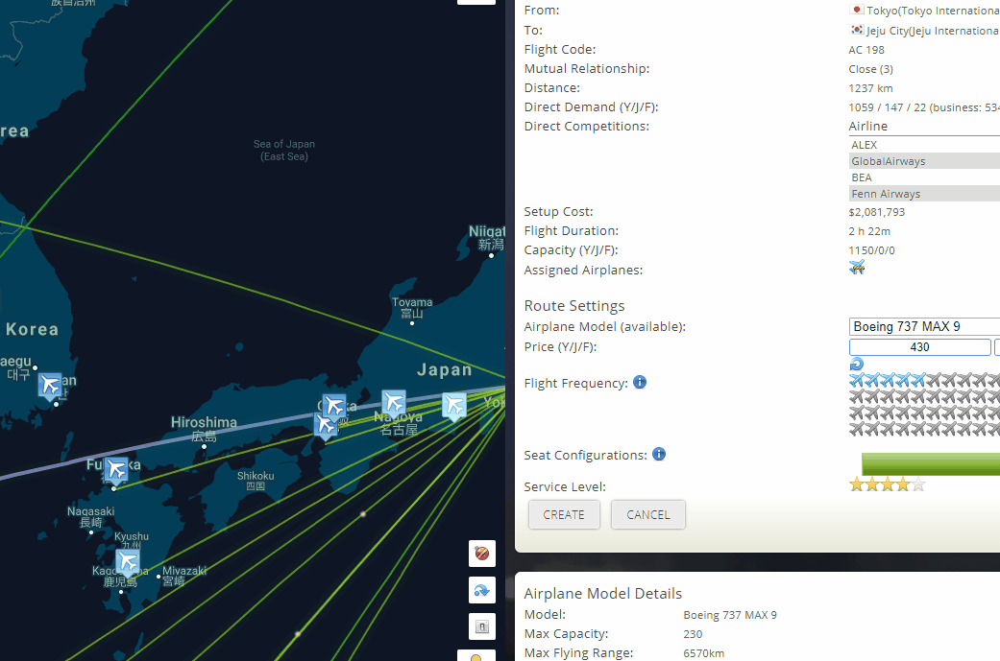

A timeline of the game's updates and events can be found here, according to the forums, Patreon page, and Discord updates! (Dates are according to EST/EDT unless said otherwise)
2018
Logo samples.
July 10/12th[1]- Logo templates added; there are only 18 to begin (more is to be added by Air Italy). Player-created logos are reserved for airlines of 50 reputation or more.
July 22nd[2]- Type of plane being used for a route is added to the route details screen.
July 26th[3]- Auto airplane renewals added, requested by Imperial Airways.
November 4th- Airport lounges implemented, which includes the "Top Lounges" category in the Rankings menu.
November 24th- The Oil market has been added, which will now change fuel prices (and with it fuel contracts and inventory policy). The in-game chat is added, contributed by a DaProf. Special Christmas animations are added.
2019
March 11th- V2 development starts. Initial ideas include adding a plane cost to a route creation (if there is no plane available), the negotiation system (instead of slots), and LF requirements (i.e. your route has to have reliable LF or it will be deleted by the game).
Negotiations as they looked in 2019.
March 26th- Auto-order/auto-assign planes are added to route creation. The negotiation system officially replaces the slots system, with an animation! (See right)
August 5th- Minor changes to the passenger simulation:
Easier to attract business and first class passengers as their quality expectation is lowered
Passengers are slightly less willing to downgrade to a different class
Passengers are less willing to switch airlines for transits (Removed later that day, due to the amount of transit pax lost)
High flight frequency (> 14 per week) will be more attractive to passenger with preference "Swift"
Business and First class passengers are less sensitive to price changes
Code optimization to avoid some redundant calculations
Business and First class passenger favors direct flights more
August 10th- Game time reduced from 90 minutes to 40-50 minutes through optimization.
November 11th- Passenger flight map's memory usage was reduced (as it brought down systems). The chat should no longer disconnect/reconnect as often, duplicate messages after reconnecting, and the framework is upgraded to match the latest game version. Airline status (the colored dots next to the names in the Rivals menu) is also added, as well as the option to see/unsee inactive airlines (Airlines who have not logged in in the last 30 days).
November 17th- Rival history and details are added to routes.
November 20th- The Where's Santa event is mentioned.
November 24th- The aforementioned event is released and available to play. UI improvements, which include sorting. Loading speeds for certain game parts are reduced (like the passenger map, which went from ~10+ seconds to 1!)
November 27th- The "type-and-search" was added to chat for emojis. (i.e. type ":emojiname:" to get a pop up in which you can click them)
December 30th- V1.1 changes are announced/implemented:
A single airplane can now be assigned to multiple routes
Restrict 5 customizable seat configurations per airplane model - the configuration is customizable and specific to each player. For the upgrade, a script will be run to find 5 configurations that matches the existing routes. If more than 5 seat configurations are found, then it will try its best effort to do the matching
Airplanes will be assigned to a home base, and it can only fly routes from that home base. If a base is removed, then the airplanes will be sent to the HQs
Airplanes can switch home base
There will be a soft limit on how many routes can a base support (Not implemented yet)
National and Partnered Airline statuses (originally intended for V2). National gives 10 loyalty boost while partnered gives 5. Both increase the route limit of bases in that country. (Not implemented yet)
2020
January 4th- V1.1 is formally released. All the changes from December of last year is included, with UI changes.
January 11th- The passenger map is updated, in the animation.
Prototype of the Search menu. (April 25th)
April 21st- The /img <imageurl> command is added for chat. This feature was (and still is) only available to Patreons.
April 25th[4]- As part of V1.3, the search function is planned and later added (April 26th), as well as a capital city charm (never added).
May 4th- Flight maps of alliances and rivals are added, viewable from their respective menus.
November 20th- Cash reward for the Where's Santa event is increased.
November 24th- Route negotiation screen for V2 has been redone, and airline-country relationships have been added.
December 10th- Alpha testing for V2 is open to the public. This is a new server dedicated to V2 testing at https://v2.airline-club.com (This link will bring you to the game now). With the previously mentioned updates to the negotiation system and country relationship system added, as well as runway requirements, turnaround time updates, gateway airports, loyalists, and updated airport data.
December 22nd- The airline heat map is added.
2021
January 28th- UI updates as well as the Dark Theme is added. The side tabs are replaced with a scrollable side bar. Campaigns (advertisements) and passenger surveys are added to spice up routes. The Concorde and Tupolev Tu-144D is added, and the ability for passengers to take speed (route time) into consideration. Reputation is changed entirely where it is now airport based. Startup profiles are varied with new airport ratings. Some in-game tutorials are added, system broadcast, HQ images in the office menu, and animations/rewards for a great success in a route negotiation.
March 16th- Shuttle service is added for bringing in passengers from nearby airports.
April 7th- Last beta testing starts (with the new airport data).
April 10th- The official discord is added, with 14 members joining the first day.
April 24th[5][6]- Interest in the Bank menu is switched to simple interest, after the user Blue Moon on the Discord suggested a change from the old method.
May 1st- Usable delegate count is added to the top bar, flight categories in the Search menu, dynamic difficulty for routes, and a boost for the isolated airport charm is added.
May 4th- A negative cash balance will now have red text, and the top bar delegates are clickable showing negotiation, country, or campaign assignments.
May 8th- Airline liveries and slogans are now available to customize in the Office menu, double charging for base upgrade bug is fixed, as well as adding an invite for the Discord in the upper-right corner.
May 22nd- Tooltips for loyalty, awareness, and isolated and gateway airport charms are fixed.
June 5th- V2 is fully released, and the V1 game world is removed.
June 17th- Creating routes like A>B and B>A is removed. (This was possible by having two bases and planning a flight). This also removes a loophole called "Isolated Base" where you have routes between 2 bases, but cut the connection from the HQ.
June 19th- Color pickers have been improved, as well as the ability to plan a flight back to your HQ.
July 1st- Debugging code is added to the timer and broadcast system. Login errors are distinguished between expired session or invalid login.
July 9th- A bot joins the Airline Club Discord, to verify new members via checking a generated code in a user's slogan. Members who join after July 12th are expected to verify.
July 13th- After constant harassment from airlines setting abnormally low ($0-10) prices, it is publicly announced users who are creating multiple airlines for sabotaging demand or for feeding a main with low prices are subject to a ban.
July 16th- Lounges will now go inactive when the airline maintaining them falls out of the top spot. (Not sure when or why this was deactivated)
July 17th- Some rewards are boosted: the Olympics loyalty boost, and negotiation great success cooldown and loyalty bonus.
July 18th[7]- The timer display has been fixed, and charging $0 on routes is no longer allowed. A weekly pax count is estimated at 8.4m on this day (as in 8.4 million round trips).
July 18th/19th- Rabidawgs Gaming YT's airlines have been banned for breaking several game rules, breaking the Discord TOS as well as the community's trust. A heated discussion has taken place on the 18th over ticket prices, and the Discord's TOS. On the 19th, He was caught hacking the game. Thankfully, the code inputted was rumored to come from Wikihow amateur at best and did not harm anyone. Read from here for the full story.
July 21st- Vulpine Air, Galactic Republic, and CSA are now admins in-game.
September 4th - Minor changes have been added: Entrepreneurial spirit is now suggested for new players, random long routes in the tickets section has been fixed, and the oil policy UI has been made more clear.
September 12th - Game rules have been added into the game, including policies of airlines per player (3 for patreon users, 2 for everyone else, sometimes called the 2/3 rule) as well as the bot usage. Support ticket bot was added into the discord server.
September 18th - New backgrounds added, as well as settings to change between the backgrounds and UI colors. Patreons are able to upload their own backgrounds in the same spot. Some minor changes are also added to fix some bugs with the new backgrounds.
September 23rd[8]- Torus Air (Aphix) makes a new route menu UI, and is under active consideration by AC to be implemented in the game.
September 24th - Alrianne Trans Inc creates a mod that shows fuel burn/pax and determines how much frequency a plane can fly on a specific route
September 26th - A minor update fixes a bug that would cause planes to go back to its previous condition when manually replaced.
September 28th - Admins can't ban/reset/mute other admins. Airline Club goes down for 22 minutes, from 19:23 to 19:45, due to AC forgetting to turn the server on after updating the game.
October 9th - An update is pushed to decrease loading times for the Rivals and Alliances menus. An official verdict is made regarding airline transferring: the airline in question counts as an airline for both players under the 2/3 airline limit.
October 17th - New hub specializations are released; Branding (Scale 9) and Negotiation Expert II (Scale 13). A 100 week cooldown is imposed on specializations.
October23rd - Flight frequency for each plane is now shown when selecting an aircraft in the route creation/edit menu. Aircraft models you own are bolded and placed at the top of the aircraft list. Airline history is increased to 500 weeks and a bugfix for the pax map. V2.1 development is announced with a leak for airport assets.
October 24th - The game now shows which type of pax for each class (e.g. Y/J/F pax will be tourist and Y/J/F will be business type pax)
October 29th - Business and first class pax will now take into consideration available seats as part of route frequency (e.g. if you have only 1 seat for 30 flights, the pax use to think that was a lot).
October 30th - The game is upgraded to a better server, putting it out of commission for a few hours, to hopefully reduce the cycle time. The game is moved to a better host.
November 5th - The game is troubleshooted to try and bring down the sim time.
November 7th - The amount of transits that pax will consider is reduced (affects business/first pax most). Business/first pax are less reluctant to downgrade to another class.
November 9th - The Santa event/Christmas theme is introduced for this year's holiday season!
November 11th - New fixes are introduced to the game.
November 22th - Dev works all weekend to bring optimization improvements to the simulation time.
December 25th - Generic transport is added (as an experiment), replacing shuttles (which are now removed). Airlines that have purchased shuttle services are refunded. Mutual relationships are added to the search page. See here for more information about the new shuttle system.
2022
January 9th - A test server is added, for experimenting with airport assets. The server is up in random periods due to cost of running this and the standard server.
January 15th - V2.1 features are officially announced, including the following: Airport assets (mentioned above), base level 13/14 specializations, more airline grades, new plane maintenance cost, more aircraft, co-leaders for alliances, and more. See here for the full list and more info.
January 16th - Airlines can now mark airlines in an alliance a color they choose, and it will appear with their airline name (color tags)
January 20th - Alliance co-leaders are added, having the same permissions as the leader with some exceptions: they can not kick or demote the leader or other co-leaders, and will become the leader if the current one is removed from the alliance. The leader can also hand off their power to the co-leader, and their roles will be switched.
January 22nd - A new reward for the Olympics is added, temporary delegates.
January 25th - Logs will now show the change in airport rank.
January 28th - Airports will now list the airline's rank in loyalists, even if they don't gain reputation from them.
January 29th - Rank changes now can lead the player to the airport if clicked (must be after this update).
May 7th - First announcement of a poster contest for in-game airlines.
July 4th - Version 2.1 updates leaked with the test server released for a week. New features include alliance missions, aforementioned airport assets, an airplane's maintenance factor, and supersonic travel is tolerated by swift, business and first class pax.
August 31st - Programs that gathers data from the game server is now a bannable offence. This will not affect mods currently on the wiki.
December 3rd - The following updates are deployed: Christmas event starts, passenger class filters on the passenger map, lounge status in the rivals details, fixes pertaining to logs and self-note pages, improved performance of the heatmap, and the clock icon is adjusted over to avoid the menu buttons.
December 25th - V2.1 is released, containing all sorts of new features. You can view the full list of updates here.
2023
January 14th - Renaming is edited, which limits the feature to Patreon and admin users at an interval of 30 days. The rival and search functions will show previous names


{kind=link}
{kind=link}
{kind=link}
{kind=link}